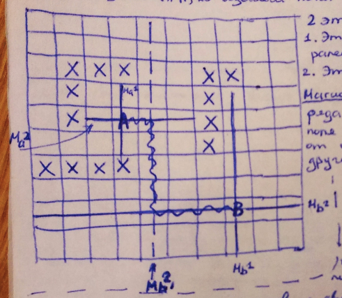

Вопрос 17: Трассировка соединений на основе представления о магистралях.

Этапы:
- Этап построения магистралей;
- Этап построения пути;
Магистраль - линия, при наличии ряда свободных дискретов рабочего поля по горизонтали или вертикали от одной запретной зоны до другой
Алгоритм построения малоповоротных путей
Этап 1
На базе исходных точек строим магистрали 1-ого уровня за счет включения в них свободных дискретов с двух сторон исходных точек.
Если магистрали 1-ого уровня не пересеклись, значит строим магистраль 2-ого уровня, затем 3-ого и так далее. Магистрали каждого следующего уровня строятся перпендикулярно к магистрали каждого предыдущего уровня, используя дискреты магистрали предыдущего уровня.
Построение магистралей продолжается до тех под, пока любые разноименные магистрали не пересекутся или уже негде строить магистрали.
Этап 2
Построение пути вдоль пересеченных магистралей.
"+": Более высокая скорость решения задачи, но при построении магистралей не очень высокго уровня. Всегда найдется решение.
Надо ограничить уровни магистралей (2-3).